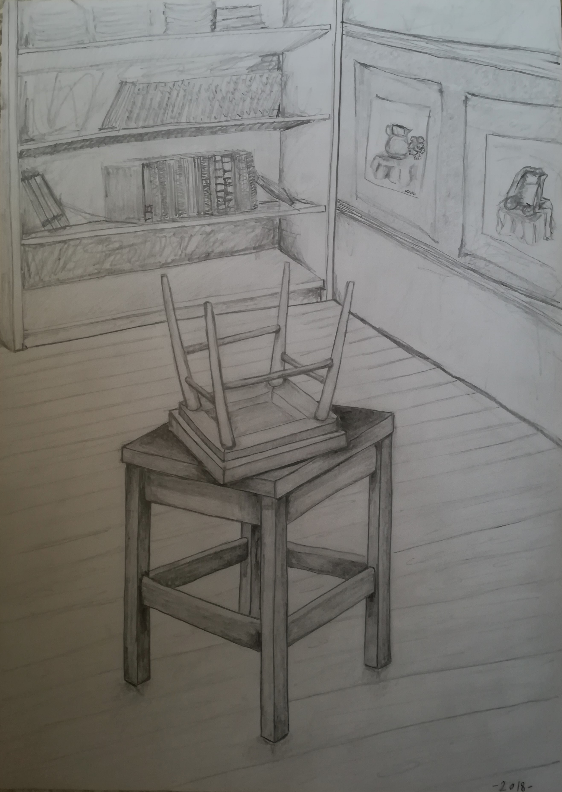
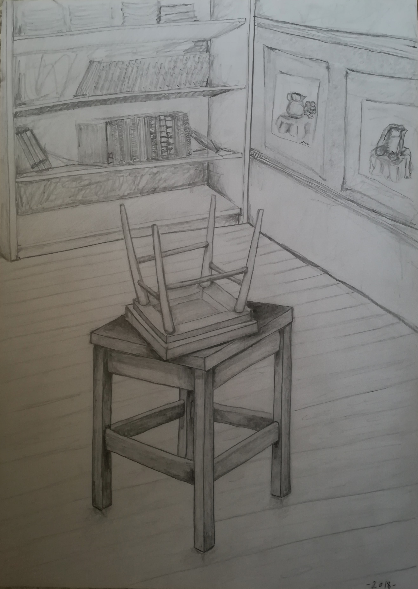

Jelenleg a Budapesti Műegyetem gépészmérnöki karán vagyok hallgató.
Gimnáziumi éveim alatt több tantárgyba is beleszerettem, több hobbim is lett, így nagyon nehezen döntöttem el, hogy mit is akarok igazán csinálni/tanulni. Végül az ipari termék- és formatervező mérnök szakot választottam, mivel elég sokszínűnek találtam ahhoz, hogy majd egyetemi éveim alatt legyen időm pontosabban orientálódnom.
Mindigis nagy hatással voltak rám a művészetek, így ennek köszönhetően kezdtem el alkotni és zenélni is. Nyolc éve klarinétozom és zenekarban játszom, ezen kívűl 3-3 évet zongoráztam és szaxofonoztam is. Képzőművészetben a grafika és a festészet áll hozzám a legközelebb, főként a temperás festés.


 
